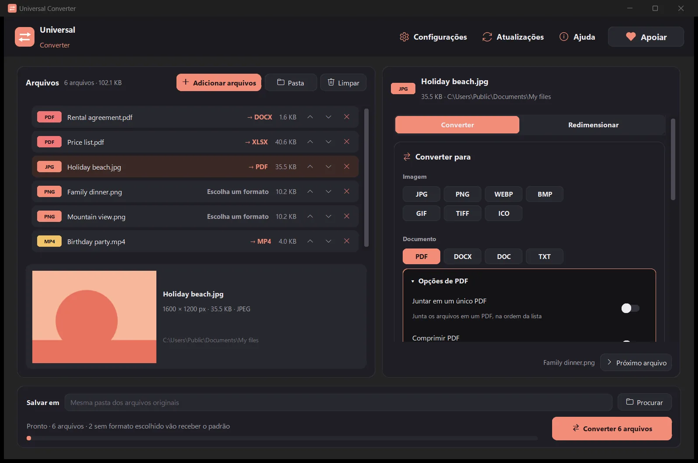

Redimensione uma foto ou assinatura para 20 KB, 50 KB ou pixels exatos
Formulários de inscrição e de provas online costumam pedir uma foto ou assinatura com dimensões exatas, como 200 × 230 pixels, e um tamanho de arquivo abaixo de 20 KB ou 50 KB. O Universal Converter ajusta os dois de uma vez e mantém a imagem tão nítida quanto esse tamanho permite. Suas fotos nunca saem do seu aparelho.
Como instalar e atualizar
- Abra o .dmg baixado e arraste o Universal Converter para Aplicativos.
- Abra o app. Na primeira vez, o macOS o bloqueia porque ele não é assinado pela Apple: clique em OK.
- Abra Ajustes do Sistema > Privacidade e Segurança, role para baixo, clique em Abrir Mesmo Assim e digite sua senha. Você só faz isso uma vez.
Atualizações: se você permitir quando o app abrir pela primeira vez, ele procura novas versões sempre que inicia, verifica a assinatura digital delas e as instala quando você quiser.
Como instalar e atualizar
- Toque em Baixar para Android no seu celular.
- Abra o arquivo baixado. Se o Android pedir, permita que seu navegador ou gerenciador de arquivos instale apps.
- Toque em Instalar.
Atualizações: o app verifica mais ou menos uma vez por dia e avisa quando uma nova versão está pronta. Baixe do mesmo jeito e instale por cima da antiga; suas configurações são mantidas.
Como instalar e atualizar
- Baixe o arquivo .AppImage.
- Torne-o executável: clique com o botão direito, Propriedades > Permissões e permita executá-lo como programa (ou num terminal: chmod +x Universal-Converter-*.AppImage).
- Dê um clique duplo. Nada é instalado: o app é este único arquivo.
Atualizações: se você permitir na primeira vez que o app abrir, ele procura novas versões sempre que inicia, verifica a assinatura digital delas e substitui o arquivo AppImage onde ele está.
Como fazer
- Abra o Universal Converter e escolha Imagens à esquerda.
- Arraste seus arquivos ou uma pasta inteira para a janela, ou clique em Adicionar arquivos.
- Mude para Redimensionar no alto, escolha Ambos e depois digite a largura e a altura que o formulário pede e o tamanho máximo do arquivo, por exemplo 20 KB.
- Clique em Converter. Os novos arquivos são salvos ao lado dos originais, ou na pasta que você escolher.

Por que offline?
O Universal Converter faz o trabalho no seu próprio aparelho. Seus arquivos ficam privados, arquivos grandes não são problema, e funciona sem conexão com a internet.
Mais coisas que ele faz
- Converta um PDF para Word
- Converta documentos do Word para PDF
- Junte vários arquivos em um PDF
- Comprima um PDF para o tamanho que você escolher
- Comprima um PDF para 100 KB, 200 KB ou qualquer tamanho para formulários online
- Converta páginas de PDF em imagens JPG
- Transforme um documento digitalizado em um arquivo do Word editável
- Converta imagens entre JPG, PNG, WEBP e mais
- Redimensione imagens ou reduza-as a um tamanho de arquivo
- Junte fotos em um PDF
- JPG para PDF com menos de 100 KB
- Copie o texto de uma imagem (OCR)
- Comprima um vídeo sem enviá-lo
- Converta vídeos entre MP4, MKV, WebM, MOV e AVI
- Salve o som de um vídeo em MP3
- Crie um GIF a partir de um vídeo
- Leve tabelas de um PDF para o Excel
- Converta um extrato bancário em PDF para Excel
- Extraia tabelas de notas fiscais em PDF para o Excel
- Assine um PDF
- Preencha um formulário em PDF